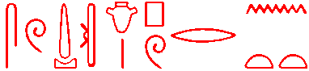

News and gossip 1994
This file contains news and gossip up to the end of 1994.
Professor A.F. Shore
Professor Shore, Emeritus Professor of Egyptology at the University of Liverpool, died on 27 November 1994, shortly after attaining his 70th birthday. A Festschrift to celebrate his birthday was in press at the time.
The AEB
Willem Hovestreydt has sent me a HTML version of an article submitted to GM on the future of the AEB. View it by clicking here.
Road near the Pyramids
There have been recent stories about a new road being built near Giza. Click here for two reports from Reuter.
alt.culture.egyptian
An Egyptian newsgroup has been created by someone recently in the alt hierarchy. It will of course be read by scholars and (particularly) non-scholars alike. If your WWW software is correctly configured (and you have news access of course), clicking here should get you the newsgroup. Contact your local system manager if this doesn't work.Bad weather in Egypt
Severe storms in the past few days have created havoc in Egypt. The main story was of course the disaster at Dronka, north of Assiut. There was also a tourist bus washed into the Red Sea. Luxor was affected, and there was flooding in the Valley of the Kings. It was reported on the BBC radio on 7/11/94 that the Egyptians have announced their concern about the effect the rainwater is having on the monuments.Click here for a report.
Next ARCE symposium
Click here for information on and programme of the ARCE symposium in NY on December 10.New film
Click here for some stuff on the film "Stargate".TOCS-IN bulletin
Click here for an update on TOCS-IN.Click here to access the ftp archive mentioned in this bulletin.
Discoveries at Saqqara and Abusir
Click here for information about discoveries in the area of the pyramid of Sahure at Abusir.Click here for information about new tombs found at Saqqara.
Discoveries in Sinai
Click here.New Carian inscription???
Click here.Prof. Louis Vico Zabkar
19/09/94: Leonard H. Lesko wrote on the Chicago List:After a long illness Prof. Louis Vico Zabkar died on September 15, 1994. Born in 1914 in Dalmatia, he received his Ph.D. from the University of Chicago in 1958 and taught in the History Department of Loyola University in Chicago before becoming Professor of Egyptology at Brandeis University where he served until his retirement ten years ago. He will be remembered as an outstanding teacher by his many students and as one of the few American Egyptologists of his generation with interests in Egyptian religion, Ptolemaic hieroglyphs, and Nubian studies.
Leonard H. Lesko
Dept. of Egyptology
Brown University
Annual Egyptological Bibliography
06/09/94: Jaromir Malek placed on the Chicago Mailing list a statement about the future of the AEB. To read it, click here.
10th Table Ronde Informatique et Egyptologie
25/8/94: Robert Vergnieux has asked that I inform browsers of the following:
- that the 10th Table Ronde Informatique et Egyptologie took place in Bordeaux in July 1994.
- that the proceedings of this meeting will be published in 1995.
- that papers to be published will be accessible in Winter 1994-95 in the planned "on-line publications" in the planned WWW site at Bordeaux.
Tanis Papyri--from Chicago ANE List 25/8/94
An article by Ph. Brissaud. "Une campagne intermediaire". SFFT Newsletter: Bulletin periodique de la Societe Francaise des Fouilles de Tanis. 1994; 14: pages 1-6. [apparently available since May, but which arrived in Chicago a couple of weeks ago] gives some information on the find last winter of demotic papryri at Tanis, and includes hand-copies of eight fragments.Charles E. Jones
cejo@midway.uchicago.edu
Holographic Storage--from Chicago ANE List 25/8/94
I'm a graduate student in Information Studies with a special interest in mid-east archaeology. I'd like to make scholars in this field aware (if they are not already) of the major developments taking place now in holographic storage with the use of crystals. Two excellent reports on this have been mentioned in :New Scientist Vol. 143 No 1938 Aug. 13 1994 Pages 22-23
Science Vol. 265 Aug 5 1994 Pages 736-737
Would holographic image storage possibly solve the problems of artifact destruction in such countries as Iraq?
Cal. Sadowski
sadowski@dao.nrc.ca
Aida in Luxor
Verdi's Opera "Aida" is to be performed later this year in front of the temple of Hatshepsut at Deir el-Bahari.There are 6 performances between 26 Novemebr and 1 December, apparently marking the 125 anniversary of the Cairo Opera House.
I quote from a shhet supplied by a tour operator (any errors are not mine!):
"Costumed and staged by Vittorio Rossi, conducted by Enrico de Mori and including some of the greatest opera singers in the world:
Aida: Wilhelmina Fernandez, Pauletta de Vaughn
Re: Goran Simic
Radames: Guiseppe Giacomini, Bruno Sebastian
Ramphis: Bonaldo Giaiotti
Amneris: Susan Porter, Bruna Baglioni
Amonasro: Alain Fondary"
This tour company is offering a package for 6 days with seats at the opera. However, it looks from the plan as if the seats they have are, as we say in England, "up in the gods", and a long way from the stage.
BUT if you want to pay more you can for better seats. For the best seats it says it is an *extra* 200 pounds, going through other categories at *extra* 170, 135, and 100.
Nigel Strudwick
Unless otherwise indicated, © Nigel Strudwick 1994-2016